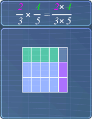
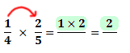
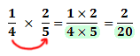
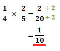
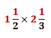
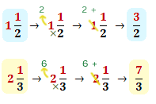
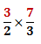
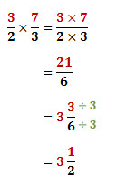

Multiplying Fractions
Lesson Objective
In this lesson,
we will learn
the basics
behind
multiplying fractions
and will be
using some
examples to
explain how this multiplication
works.
About This Lesson
It is easier to multiply fractions as
compared to adding or subtracting fractions.
This is because we don't have to worry about
the denominators.
In this lesson, we will learn how to multiply two fractions that:
In this lesson, we will learn how to multiply two fractions that:
- are proper fractions
- a proper fraction and a mixed fraction.

Tip #1
When multiplying fractions, the denominators don't have to be the same.
Tip #2 - How to Multiply Fractions
Below are steps to multiply two fractions:
-
Multiply the numerators:

-
Multiply the denominators:
-
Simplify the fraction if possible: 
Tip #3 - Multiplying Mixed Fractions
The steps below show how we can multiply mixed fractions. Let's use the
following example:

-
Convert the mixed fractions to
improper fractions:
-
After the conversions, we have:
-
Now, multiply the fractions as
usual. Simplify if possible: 
Math Video Transcript
Multiple Choice Questions (MCQ)
Now, let's try some MCQ questions to understand
this lesson better.
You can start by going through the series of questions on Multiplying Fractions or pick your choice of question below.
You can start by going through the series of questions on Multiplying Fractions or pick your choice of question below.
- Question 1 on multiplying two proper fractions
- Question 2 on multiplying a mixed fraction with a proper fraction